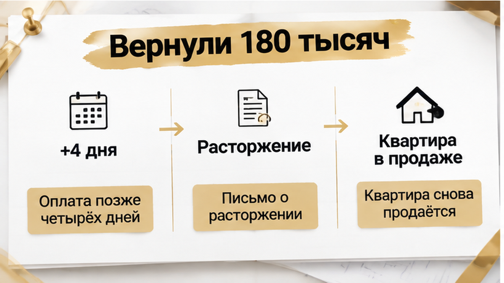
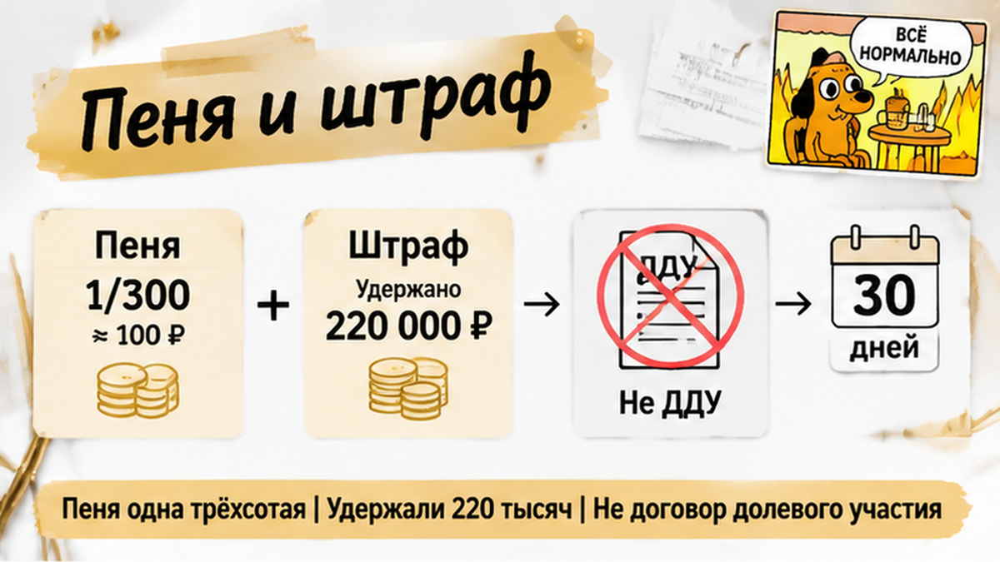
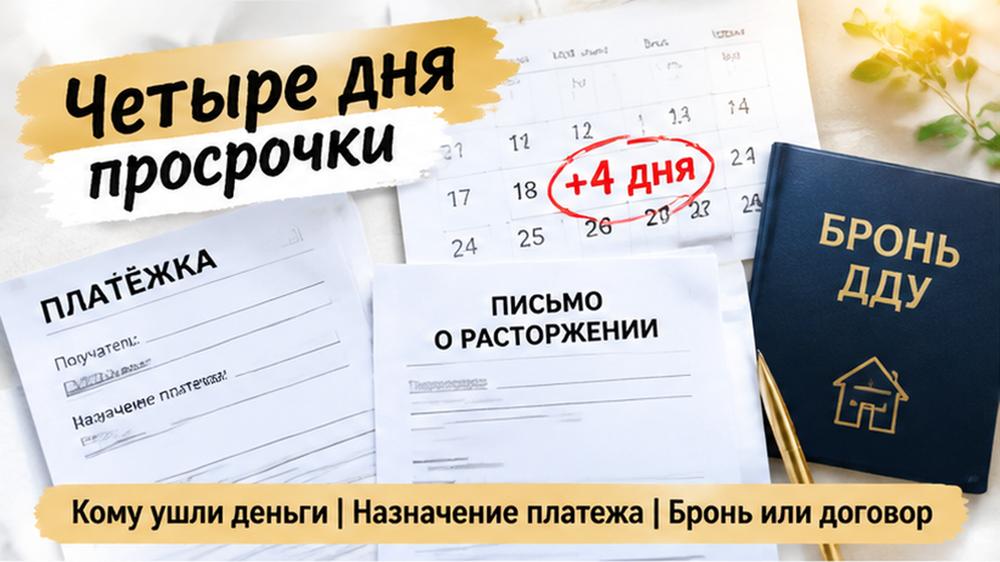

В Тюмени семья задержала платёж за новостройку на четыре дня — и получила письмо о расторжении, пока квартира уже возвращалась на рынок. Первый взнос в 400 тысяч рублей был внесён, следующий перевод привязали к зарплате, но деньги пришли позже установленной даты. Оплату отправили, однако это не остановило расторжение: квартиру начали показывать другим покупателям. Здесь решает не вывеска «рассрочка без банка», а документ, по которому семья перечисляла деньги и получила ли она уже оформленное право требовать квартиру.
Разбираю условия покупки новостроек Тюмени в Telegram и MAX: что подписывают, куда уходят деньги и где покупатель остаётся без привычной защиты.
Семья выбрала рассрочку напрямую у застройщика. Ипотечную заявку оформлять не пришлось: был первый платёж, затем — даты следующих переводов. На бытовом уровне схема выглядела просто: часть стоимости отдать сейчас, остальное закрывать по графику.
Внесли 400 тысяч рублей. После такого платежа обычный покупатель думает, что квартира уже почти его собственность, а задержка следующего перевода — просто неприятная пауза. Но деньги сами по себе не отвечают на главный вопрос: какое право покупатель получил взамен?
Это может быть зарегистрированный договор долевого участия, по которому платежи идут на эскроу. А может быть предварительный договор, бронь или отдельное соглашение до оформления основного документа. В офисе продаж обе схемы могут называть покупкой одной и той же квартиры, но правила расторжения и возврата денег у них разные.
Поэтому документ этой семьи нельзя автоматически назвать ДДУ. Нужно увидеть его вид и проверить регистрацию. График платежей, первый взнос и обещание «потом оформим основные бумаги» этого не доказывают.
Граница простая: намерение купить квартиру — ещё не оформленное право на неё. Похожую разницу между одобрением покупки и завершённой договорной цепочкой я разбирал в истории, где ипотеку на новостройку одобрили, а эскроу не открыли. Покупатель мог уже заплатить, но всё ещё не понимать, какая именно схема его защищает.

Следующий платёж семья ждала от зарплаты, но перевод ушёл на четыре дня позже даты в графике. Вместо обычного напоминания о задолженности пришло уведомление о расторжении договора.
Деньги покупатель всё-таки отправил, но для продавца этого оказалось недостаточно: договор объявили прекращённым, а квартиру вернули в продажу. Бытовая логика подсказывает: «Не заплатили вовремя — сами виноваты». Документы требуют спокойной проверки.
Если перед нами зарегистрированный ДДУ с оплатой по графику, закон предусматривает для отказа застройщика другую последовательность. Основанием может быть просрочка более двух месяцев либо более трёх нарушений сроков за двенадцать месяцев. Перед отказом нужно письменное предупреждение, а после него — не меньше тридцати дней, чтобы погасить задолженность.
Одна четырёхдневная задержка сама по себе в эту последовательность не укладывается. Но это ещё не означает, что семья автоматически выиграла спор. Пока неизвестно, что именно подписано, куда переводились деньги и на какой пункт продавец сослался в уведомлении.
Письмо о расторжении — не финальный ответ, а повод поднять договор, график, платёжное поручение, переписку и расчёт возврата. Дальше решает не тон менеджера, а основание, по которому продавец решил прекратить договор и удержать деньги.
Из первого взноса семье вернули 180 тысяч рублей. Ещё 220 тысяч удержали, а квартиру снова выставили на продажу. Но фраза «надо было платить вовремя» не объясняет, почему продавец оставил именно такую сумму.
Нужно поднять договор, платёжные поручения и документ о расторжении: деньги могли удержать за бронь, отказ от покупки, штраф по отдельному соглашению или на другом основании. В офисе это называют «условиями рассрочки», но юридически такие варианты не одинаковы.
Вид договора семьи не подтверждён, поэтому нельзя автоматически ссылаться на правила для дольщиков и считать 220 тысяч законной санкцией за четырёхдневную просрочку. Подтверждённого судебного решения о правомерности удержания тоже нет. Первый вопрос здесь простой: за что именно продавец оставил себе эти деньги?
Рассрочка от застройщика — удобная замена ипотеке или риск, при котором несколько дней задержки могут стоить квартиры и сотен тысяч рублей?

Если перед нами зарегистрированный ДДУ, за просрочку платежа закон предусматривает пеню: 1/300 ключевой ставки Банка России за каждый день задержки. Её считают от просроченной суммы и числа дней, а не автоматически от первого взноса или всей цены квартиры.
Например, при задержке 100 тысяч рублей на четыре дня и ставке 14% годовых пеня составит примерно 187 рублей. Это не расчёт по ситуации семьи: размер её платежа неизвестен. Но разницу видно сразу — законная пеня за несколько дней и удержание 220 тысяч из первого взноса не одно и то же.
Для зарегистрированного ДДУ действует отдельная процедура отказа застройщика: просрочка более двух месяцев либо более трёх нарушений сроков оплаты за двенадцать месяцев. Перед отказом нужно письменное предупреждение, а прекратить договор можно не раньше чем через 30 дней после него.
Одна четырёхдневная задержка сама по себе в эту последовательность не укладывается. Но это правило работает только при зарегистрированном ДДУ. Если деньги внесли по предварительному договору, соглашению о брони или отдельной рассрочке до ДДУ, решающими будут условия именно этого документа.
Штраф в процентах от всей цены квартиры не равен пене за конкретный платёж. Даже такой пункт не делает удержание бесспорным: в суде может встать вопрос о снижении несоразмерной неустойки по статье 333 Гражданского кодекса. Обещать автоматический возврат без документов нельзя.
При расторжении зарегистрированного ДДУ по вине дольщика деньги возвращают в течение десяти рабочих дней; при эскроу — через банк после регистрации расторжения в ЕГРН. Само слово «рассрочка» ничего не решает: для одной семьи это ДДУ с эскроу, для другой — бронь с крупным удержанием в отдельном пункте.

Разбирать такую историю нужно с платёжного поручения: кому ушли деньги, за что и на какой счёт. Именно здесь часто видна разница между защищённой покупкой и дорогим ожиданием квартиры.
Рассрочка — это способ платить частями, а не отдельный вид договора. Под этим названием могут предложить зарегистрированный договор долевого участия, бронь, предварительное соглашение или другую схему до оформления ДДУ. В офисе продаж всё это называют покупкой квартиры без ипотеки, но порядок возврата денег у документов разный.
Если это ДДУ с эскроу, договор проверяют и регистрируют. Деньги по графику вносят на специальный счёт в уполномоченном банке, а не просто на обычный счёт компании. Ипотека покупателю не нужна, но банк всё равно хранит деньги на эскроу до наступления предусмотренных законом условий.
Важна не только дата отправки перевода, но и момент зачисления на нужный счёт, а также срок оплаты в договоре. Обещание «переведёте после зарплаты» юридической гарантией не становится.
Предварительный договор зарегистрированный ДДУ не заменяет. Платёж за бронь или по отдельному соглашению до ДДУ может уйти застройщику либо посреднику. Тогда вопрос о возврате 400 тысяч решается по тексту подписанного документа, а не по правилам, которые покупатель мысленно применил к долевому строительству.
В истории о смене юридического лица застройщика и новом ДДУ важен тот же узел: кто указан в договоре и как с ним связан счёт. Похожие названия компаний, слова менеджера и выбранный номер квартиры сами по себе не делают платежи одинаково защищёнными.
Эскроу не означает, что деньги можно забрать по первому звонку. При расторжении зарегистрированного ДДУ возврат через банк связан с регистрацией расторжения в ЕГРН — государственном реестре недвижимости. А возможность банка расторгнуть договор эскроу при невнесении денег более трёх месяцев нельзя превращать в правило «опоздали на четыре дня — счёт закрыли». Отдельно я разбирал перенос ключей и деньги на эскроу: защита суммы и возможность ею пользоваться — разные вещи.
Отдельно различайте прямую рассрочку девелопера и сервисы рассрочки операторов, о которых говорится в 283-ФЗ и которые действуют с апреля 2026 года. Их ограничения не становятся автоматически условиями договора, который застройщик заключил с покупателем напрямую.
Готовая квартира по договору купли-продажи с рассрочкой — тоже не то же самое, что строящийся дом по ДДУ. Название графика одинаковое, а правовой режим другой: сначала определяем документ, затем ищем подходящее правило.
До перевода денег сопоставьте договор, реквизиты и регистрацию. Не спрашивайте в общем «деньги защищены?», а найдите конкретный счёт, пункт договора и запись в ЕГРН.
| Что сверяем | ДДУ с эскроу | Бронь или соглашение до ДДУ |
|---|---|---|
| Статус документа | Проверяем регистрацию ДДУ по сведениям ЕГРН. | Не считаем обещание будущего ДДУ уже зарегистрированным договором. |
| Получатель и назначение платежа | Сопоставляем реквизиты эскроу, договор и платёжное поручение. | Выясняем, какой компании платим и за что: бронь, аванс или отдельная услуга. |
| Последствия задержки | Отделяем законную пеню от оснований и процедуры отказа застройщика. | Находим штраф и его базу: просроченный платёж или цена всей квартиры. |
| Возврат денег | Проверяем основание расторжения и порядок возврата через банк. | Ищем условия удержания; само название «невозвратный взнос» ещё не доказывает законность. |
| Уведомление | Сверяем предупреждение, даты, историю платежей и сроки до отказа. | Запрашиваем пункт договора и письменный расчёт каждой удержанной суммы. |
Чтобы не потерять важный разбор перед выбором квартиры, заходите в мой Telegram или MAX. Продолжаю разбирать документы и условия покупки новостроек в Тюмени простым языком.
Самый спокойный момент для проверки — до первого перевода. Если квартиру обещают придержать только до вечера, это не причина отправлять деньги вслепую. Попросите договор, проверьте вид документа, регистрацию, получателя платежа и последствия просрочки. Как и при остановке сделки накануне ДДУ из-за изменения ипотечных условий, пауза нужна не для отказа от квартиры, а для проверки того, на что вы соглашаетесь.
Если уведомление о расторжении уже пришло, не подписывайте соглашение наугад: запросите расчёт возврата, соберите договор и подтверждения платежей. Проверка до перевода 400 тысяч не гарантирует отсутствие спора, но даёт увидеть непонятное условие до оплаты — и отказаться от схемы, цену которой вы не понимаете.